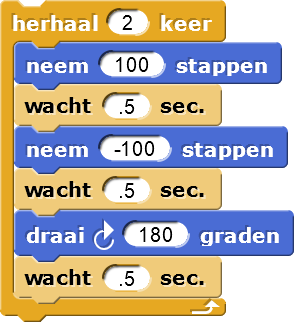

Hoeken en Draaien
Op deze pagina, lees je over het draaien van sprites, wat nodig is voor het maken van
veelhoeken. Om te beginnen ga je verschillende sterren tekenen, zoals deze:


Voer de vier experimenten in het project uit.- Vervolgens kan je gaan experimenteren met het script hiernaast:
- Experimenteer met een rechte hoek (90 graden):
- Verander het
draaiblok door op de 180 te klikken en vervolgens 90 te typen. - Verander het aantal herhalingen (het nummer dat je aan je
herhaalblok geeft) totdat de sprite dezelfde kant op wijst als toen hij startte.
- Verander het
- Experimenteer met een tiende van een hele draai (36 graden).
- Wat moet je in het
herhaalblok intypen om te zorgen dat de sprite dezelfde kant op wijst als toen hij startte?
- Wat moet je in het
- Probeer verschillende waardes voor het
neem-100stappenblok (bijvoorbeeld: -50, -10, of -90), en probeer de opdrachten (hierboven) opnieuw. Verandert deze verandering de waardes die je nodig hebt voor hetherhaalblok? - Probeer om het 2e
neem stappenblok te verwijderen (rechtermuisknop of control-klik en daarna op "delete" klikken). Probeer een paar van de experimenten opnieuw.
- Experimenteer met een rechte hoek (90 graden):
-
 Beschrijf nu wat je hebt geleerd over hoeken en draaien.
Beschrijf nu wat je hebt geleerd over hoeken en draaien.
Een 360° draai is een hele draai, de helft daarvan (180°) is een halve draai. Een vierde
van 360°  is een
kwartslag. Je hoeft de berekening niet zelf te doen. Snap! kan deze berekening voor je uitvoeren.
Je kan of gebruiken om een
zevende van een draai of een derde van een draai te krijgen.
is een
kwartslag. Je hoeft de berekening niet zelf te doen. Snap! kan deze berekening voor je uitvoeren.
Je kan of gebruiken om een
zevende van een draai of een derde van een draai te krijgen.
is een
kwartslag. Je hoeft de berekening niet zelf te doen. Snap! kan deze berekening voor je uitvoeren.
Je kan of gebruiken om een
zevende van een draai of een derde van een draai te krijgen.
Voer nu script A van het volgende bestand uit en experimenteer:- Verander de waardes van het script A om een molen te tekenen met:
- 5 wieken
- 8 wieken
- 3 wieken
- Maak een kopie van het molen-script dat je gemaakt hebt (rechtermuisknop of control-klik
het script en kies "kopieer").
- Verwijder vervolgens het
neem-100stappenblok. - Wat doet je nieuwe script?
- Verwijder vervolgens het
- Maak nog een kopie van het originele script, doe daarna het volgende:
- Verander het in een 4 wieken script.
- Verwijder opnieuw het
beweeg-100stappenblok. - Wat doet je nieuwe script?
- Verander de waardes van het script A om een molen te tekenen met:
- Script B in hetzelfde document laat zien hoe je een 60-wieken script dat zich gedraagt als de 2e
wijzer van een klok. Probeer het eens.
 Ben er zeker van dat je weet hoe dit script doet
wat het doet.
Ben er zeker van dat je weet hoe dit script doet
wat het doet. - Waarom is het slim om hier de penkleur en pengrootte aan te passen?